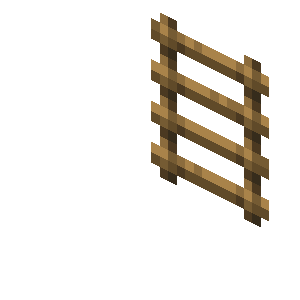
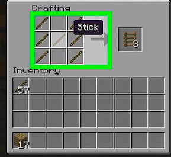

Las escaleras de mano es un bloque con la función de subir bloques en vertical.
Las escaleras de mano se consiguen en una mesa de crafteo con 7 palos

 mesa de crafteo con 7
mesa de crafteo con 7  palos mesa de crafteo con 7 palos
palos mesa de crafteo con 7 palos